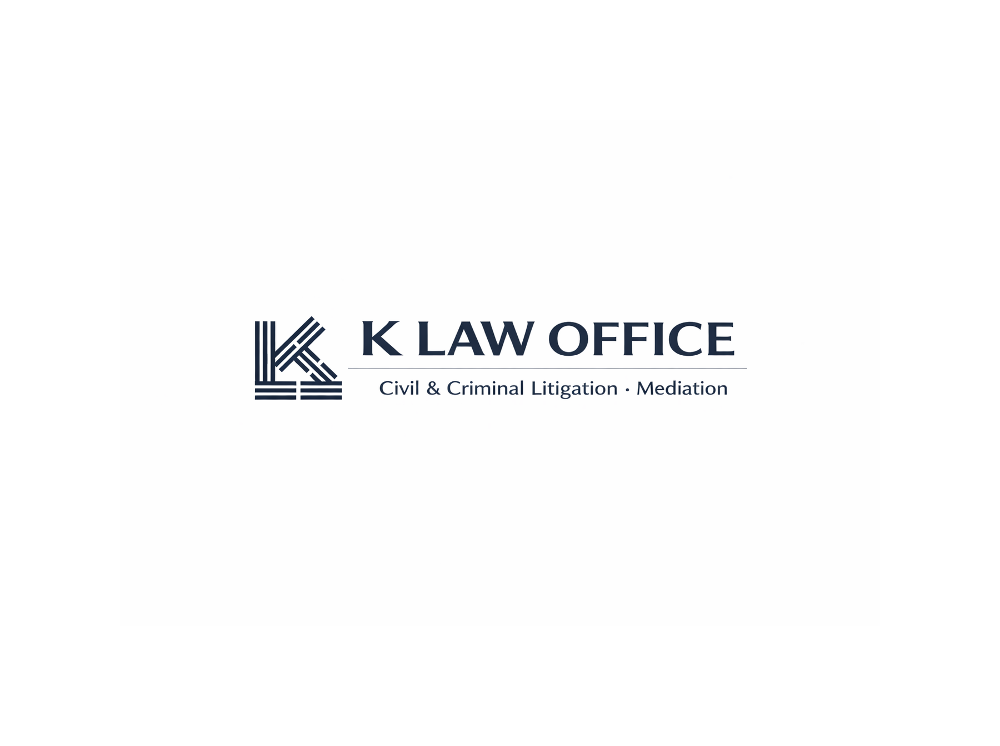

K LAW OFFICE
Seoul, Republic of Korea

K LAW OFFICE provides clear guidance and steady representation within the Korean legal system. 의뢰인이 직면한 법적 문제를 명확하게 분석하고, 현실적인 해결 방향을 제시합니다.
We handle civil disputes, criminal matters, and mediation, including criminal defense, the preparation of complaints, and representation of victims where appropriate. 의뢰인이 마주한 민 · 형사 사건과 그에 수반되는 조정 사무를 수행함으로써 의뢰인으로 하여금 최대한의 이익을 도모할 수 있도록 조력합니다.
The Monogram. The KL monogram draws inspiration from the four trigrams of the Korean national flag (Taegukgi), traditionally associated with balance and order. Its structured geometry reflects clarity of thought and disciplined legal reasoning. 모노그램. 로고로 사용된 KL 모노그램은 균형과 질서를 상징하는 태극기의 4괘에서 영감을 받았습니다. 정제된 기하학적 형태는 명료한 사고와 체계적인 법률적 추론을 반영하고 있습니다.
The Haetae. The Haetae (Haechi), a mythical guardian creature in Korean tradition, symbolizes justice and moral discernment. Historically associated with the protection of law, it reflects a commitment to fairness and principled advocacy. 해태. 역사적 · 전통적으로 법을 수호하고 재해를 막아주는 영물로써 사랑받아온 해태는 정의와 도덕적 분별력을 상징합니다. 양 옆에 자리한 해태는 공정과 원칙에 기초한 법률적 보호를 표현하기 위해 사용되었습니다.
Korean-qualified attorney representing foreign residents and overseas clients
Qualification: Attorney at Law (Republic of Korea)자격: 변호사 (대한민국)
Languages: Korean and English사용 언어: 한국어 및 영어
Representation in civil litigation and mediation, with a focus on structured case strategy and practical resolution 체계적인 전략에 근거하여 실질적인 해결로 나아가는 민사 소송 수행 및 조정 대리
Representation in criminal matters from the investigation stage through trial, including representation of victims where appropriate. Each case is approached with careful attention to procedure, timing, and potential consequences. 수사 단계부터 재판까지 형사 절차 전체를 조망하며 관리하고, 필요한 경우 피해자 대리도 수행합니다. 절차, 시기별로 세심한 주의를 기울여 각 사건에 임합니다.
Practical overviews of common legal situations foreigners face in Korea 자주 직면하는 법적 상황에 대한 실용적인 안내
Criminal형사
Police Investigation in Korea경찰 조사
What foreigners should know when contacted by Korean police.경찰로부터 연락을 받았을 때 알아야 할 사항.
→
Immigration민사
Visa Overstay in Korea비자 초과 체류(외국인의 경우)
Legal consequences of overstaying and possible paths forward.
→
Civil민사
Rent Disputes in Korea부동산 관련 분쟁
How foreign tenants can protect their deposit and resolve disputes.전세금, 보증금을 안전하게 확보하고 분쟁을 마무리하는 방법.
→
Criminal형사
Filing a Criminal Complaint in Korea고소 · 고발
How to file a complaint and what to expect from the investigation process.고소 절차와 수사 및 재판 과정에서 예상할 수 있는 사항.
→
Civil민사
Workplace Disputes in Korea직장 내 분쟁
Rights and remedies for foreign workers facing unfair treatment or unpaid wages.부당 대우 또는 임금 체불을 겪는 근로자의 권리와 구제 방법.
→
Family가사
Divorce for Foreign Residents이혼
Key considerations for foreigners navigating divorce proceedings in Korea.이혼 절차 시작하기 전, 그리고 시작한 이후 알아야 할 주요 사항.
→
Criminal형사
Being a Crime Victim in Korea범죄 피해를 입었을 때
What foreign victims should know about their rights and the criminal process.피해자가 알아야 할 권리와 형사 절차.
→
Please email us with a brief description of your matter, the relevant timeline, and your preferred language of communication. 사건의 간략한 개요, 경위, 그리고 특별히 고려해야 할 사항이 있다면 이를 정리하여 이메일로 보내주시기 바랍니다.
All inquiries are handled with discretion.모든 문의는 엄격한 비밀 보장 하에 처리됩니다.
If your matter involves imminent arrest, detention, or strict procedural deadlines, please indicate this clearly in the subject line. 체포나 구금이 임박하였거나, 엄격한 처리 기한이 걸려있는 사안이라면 이메일 제목에 명확히 기재해 주시기 바랍니다.
Suggested subject: Inquiry – Korea Litigation & Mediation 제목 예시: 민사 계약 분쟁(형사 구속 영장) 관련 문의
Email is the fastest way to reach us.이메일이 가장 빠른 연락 수단입니다. 특별한 사정이 없는 경우 이메일이 접수된 순서대로 회신을 받으실 수 있습니다.
Seoul, Republic of Korea
Time zone: KST (UTC+9)시간대: KST (UTC+9)
This website is for general informational purposes only and does not constitute legal advice. Contacting us does not create an attorney-client relationship unless and until a formal engagement is agreed. 본 웹사이트는 일반적인 정보 제공 목적으로만 제작되었으며, 법률 조언을 구성하지 않습니다. 문의를 통해 정식으로 수임계약을 맺기 전까지는 변호사-의뢰인 관계가 형성되지 않습니다.